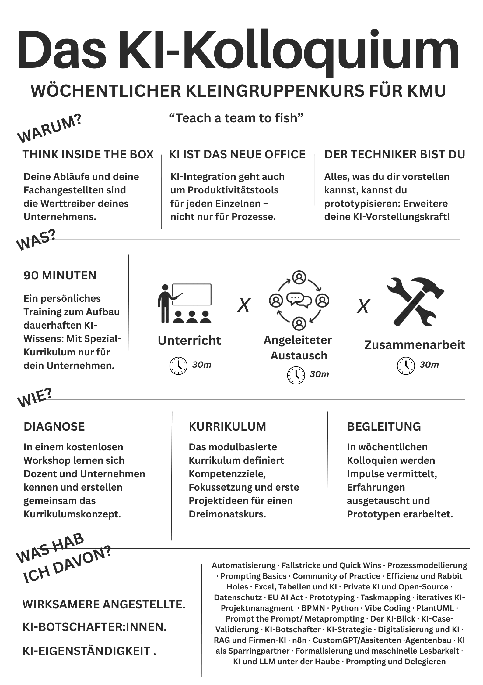

Ziehe bis zu sechs Kacheln in Dein persönliches Kurskurrikulum

Mein Quartals-Kurrikulum
Prompt zum Kopieren
Werte folgendes KI-Kurs-Kurrikulum aus in Bezug auf die Bedürfnisse meines Unternehmens, die ich im Nachgang eintippen werde. Die Module werden in wöchentlichen kollaborativen Sitzungen über einen Zeitraum von 3 Monaten gelehrt.